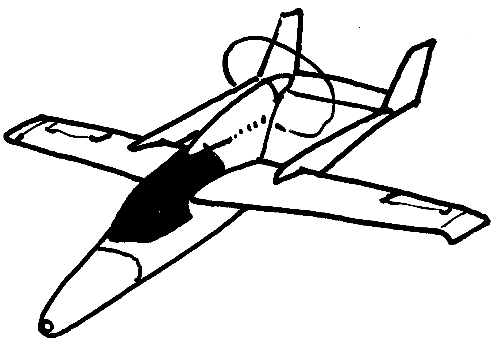

Rejected invitation to a Piaggio vertical take-off concept.
Inspired by the Taylor "Bullet". Heavy weights (fuel cell or batteries) in nose for crash safety and good CG.
Large propeller for good take-off thrust and general efficiency, plus personnel safety on the ground. Propeller away from wing wake, trying to avoid the siren effect. High location allows large propeller, unlike the normal nose location which squeezes the prop radius between the conflicting requirements of the pilot's view over the nose and the nose wheel strut length.
The picture below shows my artist's impression of the concept. It will probably be less pretty as a side-by-side two- or four-seater.
